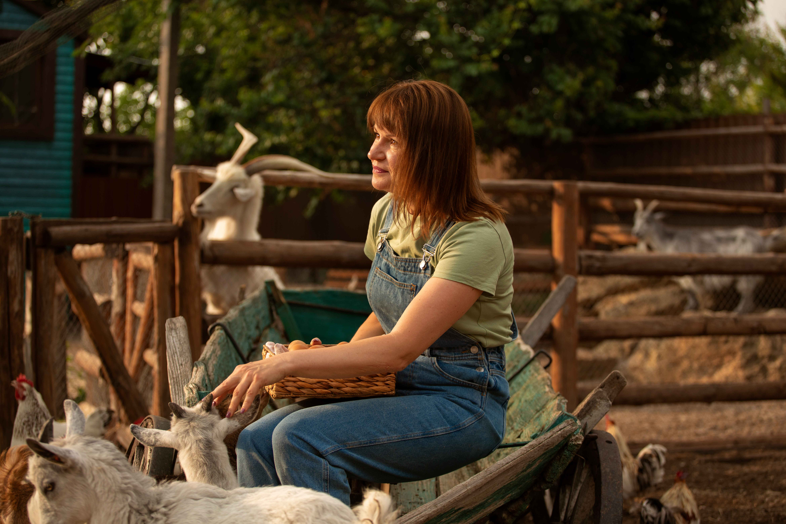
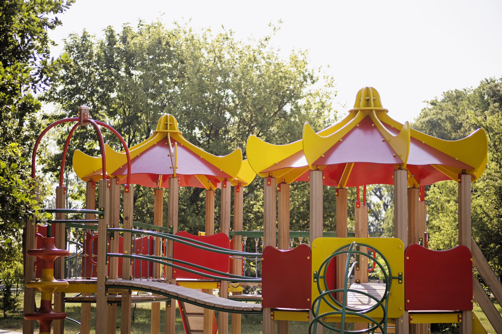
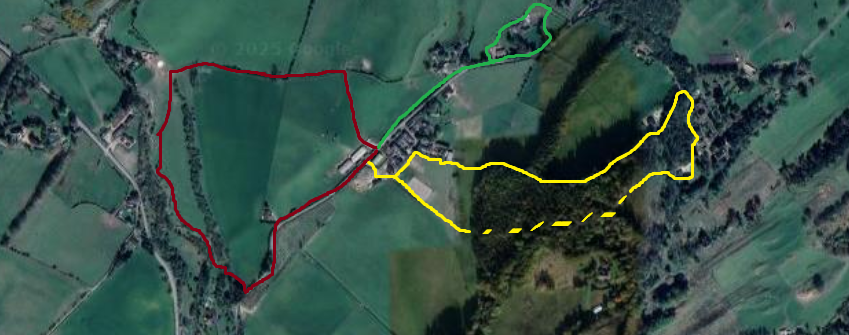

The Barn
Our barn is a hub of activity, offering a glimpse into the daily life on the farm. Visitors can meet our friendly animals, learn about farm operations, and even participate in seasonal activities.
The Playpark
The playpark is a favorite among families, featuring swings, slides, and plenty of open space for kids to run and play.
Scenic Walks
Explore the beauty of Hunter's Homestead with our scenic walking trails. Whether you prefer a leisurely stroll or a more adventurous hike, our trails offer stunning views and a chance to connect with nature.
The map shows three scenic paths - red, yellow, and green - each taking 1-2 hours to complete. Paper copies of maps are available at the barn, and digital copies can be accessed online!